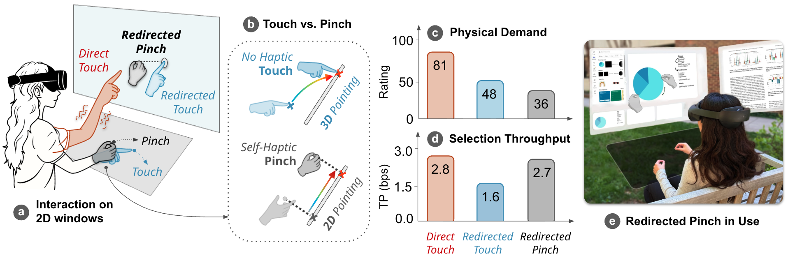
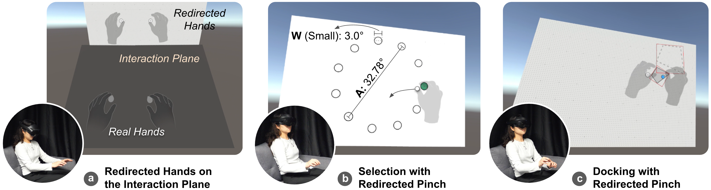
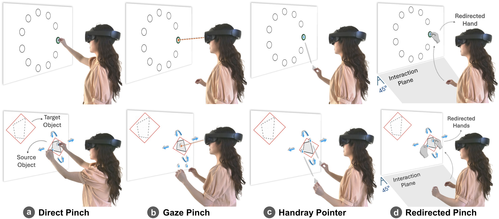
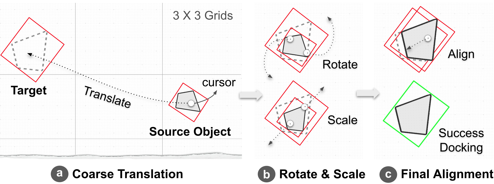
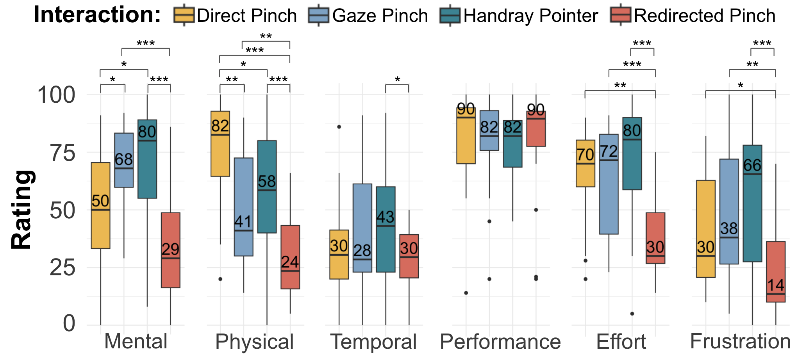

Comfortable hand movements near the waist control a vertical VR window; pinch provides explicit confirmation.
Abstract
Redirected Pinch combines input redirection with pinch confirmation for efficient and comfortable bare-hand interaction with 2D windows in VR.
A virtual plane at waist height remaps hand movements to a vertical window. Pinching provides self-haptic feedback and explicit confirmation, reducing the need to control depth during redirected input.
A design study and comparative evaluation show that Redirected Pinch balances accuracy, efficiency, comfort, and sense of agency across selection and docking tasks.
Video
How It Works
The visual workspace stays in front of the user while the interaction plane sits near the waist. Hand position and orientation are remapped to the window, and pinch gestures confirm selections and support continuous manipulation.

Evaluation
We compared Direct Pinch, Gaze Pinch, Handray Pointer, and Redirected Pinch in selection and docking tasks. The evaluation considered performance, workload, and sense of agency.


Highlights
Pinch confirmation helps compensate for the uncertainty of redirected touch input. Separating the control space from the visual workspace supports a more comfortable posture.
Redirected Pinch offered the strongest overall balance of comfort, efficiency, and sense of agency in the evaluated tasks. Participants preferred its lower effort and easier control for complex, prolonged interactions.

Citation
@inproceedings{ying2026redirected,
author = {Ying, Wen and Kim, Yeonsu and Rahman, Adil and Hu, Erzhen and Lee, Geehyuk and Heo, Seongkook},
title = {Redirected Pinch: Efficient and Comfortable Bare-Hand Interaction for 2D Windows in VR},
booktitle = {Proceedings of the 2026 CHI Conference on Human Factors in Computing Systems},
year = {2026},
doi = {10.1145/3772318.3791512}
}